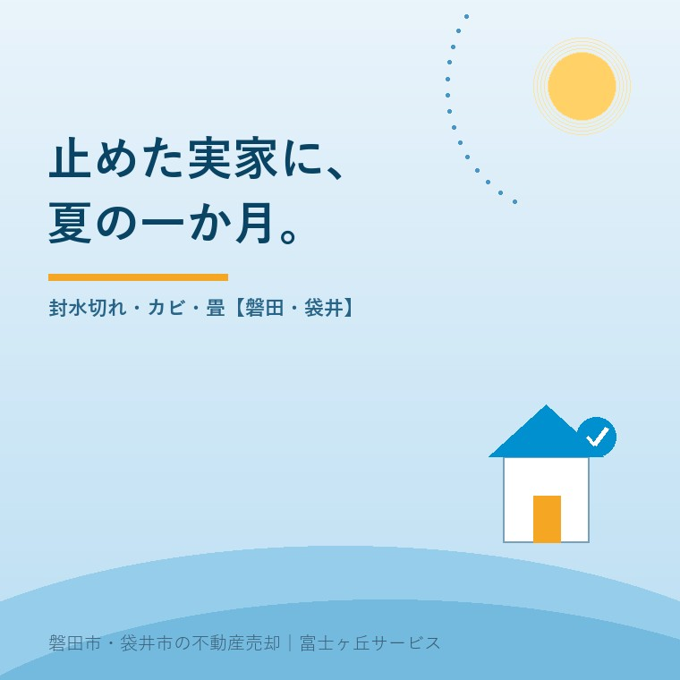

2026年8月6日｜カテゴリ：空き家管理・売却実務

この記事の要点
Q. 親が施設に入ったので、実家の電気も水道も止めました。しばらく放っておいても大丈夫ですよね？
A. 冬なら数か月は持ちます。ただし夏は別で、最初の一か月で「臭い」と「カビ」が確実に進みます。排水口の封水（トラップの水）は気温が高いほど早く蒸発し、切れた瞬間に下水の臭気とゴキブリ・ネズミの通り道になります。カビはおおむね20〜30℃・湿度80％前後で急激に増え、締め切った家の中はまさにその条件です。しかも困るのは、この二つが内覧に来た買主が最初に減点するポイントだということ。磐田市・袋井市では、介護施設の運営から不動産事業を始めた富士ヶ丘サービスのような「介護×不動産」専門の会社に相談するという選択肢があります。
7月から8月にかけて、当社にはこの相談が一気に増えます。「入院と施設入居がバタバタと決まって、とりあえずライフラインを止めてきた」。判断としては間違っていません。使わない家の電気・ガス・水道を止めるのは、費用の面でも防災の面でも合理的です。
ただ、止め方には順番と作法があります。そして、止めたあとに一度も行かない夏の一か月は、家にとって想像以上に長い。今日は、その一か月で実際に何が起きるのかを時系列で並べ、そのうえで「内覧で減点される順」に直す優先順位をお伝えします。
現場で何十軒と開けてきた実感を、経過日数で整理するとこうなります。もちろん建物の状態・立地・その年の天候で前後します。
| 経過 | 家の中で起きていること | 気づき方 |
|---|---|---|
| 〜1週間 | 使わなくなった排水口の水が減り始める。空気がよどみ、こもった匂いが出る | 玄関を開けた瞬間の「モワッ」 |
| 2〜3週間 | 使用頻度の低かった洗面・浴室・洗濯機置場のトラップで封水が切れ、下水臭が上がってくる。結露と湿気で押し入れの奥、北側の壁に黒い点が出る | 下水のような臭い／畳や押し入れのカビ臭 |
| 1か月 | 臭いが家全体に回る。畳表・押し入れの布団・革製品・木部にカビ。切れたトラップから虫が入る。庭の草は膝丈を超える | 近所の方からの「草、伸びてますよ」 |
| 2〜3か月（夏を越える） | カビが石膏ボード・木部の内部へ。臭いが建材に染みつき、クリーニングだけでは取れなくなる | 買主の「なんか臭いますね」 |
ポイントは、1か月と3か月では、原状回復にかかる費用の桁が変わることです。1か月なら通水と換気とアルコール拭きで戻せた家が、夏を越すと畳の入替えや壁紙の張替えの話になります。
台所・洗面・浴室・トイレの排水口には、必ず「トラップ」というU字やお椀型の構造があり、そこに溜まった水（封水）が下水管とのフタになっています。水を使わない家では、この封水が蒸発します。一般に数週間から数か月、気温の高い夏はとくに早く失われます。
封水が切れると、こうなります。
対策そのものは拍子抜けするほど簡単です。月に1回、すべての排水口にコップ数杯ずつ水を流す（通水）。夏はもう少し頻度を上げる。長く空ける場合は、水を流したあとに排水口のフタをラップや養生テープで覆っておくと蒸発が遅くなります。
ここで注意していただきたいのが、冒頭のご相談です。水道を止めてしまうと、この通水ができません。だから当社では、売却や賃貸の方針が決まるまでは「電気とガスは止めてもよいが、水道は残す」とお伝えしています。基本料金の月額と、あとで払うクリーニング代を比べれば、答えははっきりしています。
多くのカビは20〜30℃で最もよく育ち、湿度は80％前後を超えると一気に繁殖します（60〜70％程度でも発育するものがあります）。栄養は木材・紙・ほこり・皮脂など、家の中にいくらでもあります。
参考までに、労働安全衛生法の事務所衛生基準規則では、空調のある事務室は気温18℃以上28℃以下、相対湿度40％以上70％以下に努めることとされています。人が快適に過ごせる上限がおおむね70％、カビが加速するのが80％前後、と覚えておくと分かりやすいと思います。
締め切った空き家は、日中に屋根と壁が熱せられて室温が上がり、夜に下がるときに結露が起きます。そして風が通らないので湿気が抜けない。カビにとっては理想的な環境です。とくにやられるのが次の場所です。
| 場所 | 起きること | 予防 |
|---|---|---|
| 畳 | 畳表（い草）は吸湿性が高く、表面に白〜青緑のカビ。放置すると畳床まで及びダニも増える | 換気。上に布団・段ボールを直置きしない |
| 押し入れ・納戸 | 布団・衣類・アルバムがカビ臭に。奥の壁が黒く点状に | 襖を開けておく。壁との間にすき間を作る |
| 北側の壁・窓まわり | 結露跡と黒カビ。壁紙の裏に回ると張替えが必要 | 家具を壁から離す。カーテンは開けておく |
| 浴室・洗面脱衣 | 残った水気とゴムパッキンでカビ。臭いの発生源になりやすい | 最後に水気を拭き、扉は開けたままに |
| 革靴・鞄・ピアノ | 白カビ。価値のあるものほど傷む | 持ち出す。残すなら風の通る場所へ |
ご家族が月に一度は通えるなら、やることは「窓を対角に2か所開けて30分」＋「押し入れと下駄箱を開ける」＋「全部の排水口に通水」。この三つだけで、夏の一か月はまったく違う結果になります。
売却を前提にするなら、直す順番には明確な答えがあります。内覧で選ばれる家の話でも書いたとおり、買主は玄関を開けて数秒で印象を決めます。費用対効果の高い順に並べます。
| 優先 | 項目 | 目安の手間・費用 | 効き目 |
|---|---|---|---|
| 1 | 臭い（通水・換気・排水口の清掃） | 自分でできる／数千円 | 最大。臭う家は値引き交渉の口実になる |
| 2 | 玄関まわり・庭の草木 | 草刈り数万円〜 | 大。外観で「管理されている家」と伝わる |
| 3 | 畳の表替え・カビ拭き | 1畳あたり数千円〜／全室で数万円 | 中〜大。和室の印象を大きく左右する |
| 4 | 残置物の処分 | 数万円〜数十万円 | 中。広さが伝わる。遺品整理の記事も参考に |
| 5 | 壁紙の張替え・水回りの設備交換 | 数十万円〜 | 小。かけた費用ほど売値には乗りにくい |
お伝えしたいのは、4と5にお金を使う前に、1と2を終わらせてくださいということです。実際、リフォームに100万円かけた家より、臭いを消して草を刈った家のほうが早く売れる。これは磐田・袋井の現場で何度も見てきました。中古を買う方は「自分で直す前提」で見ていますから、直すべきは気持ちが引く要素のほうなのです。
気象庁の平年値（1991〜2020年）によると、磐田の8月は平均気温26.8℃、日最高気温の平均30.6℃。カビが最もよく育つ帯にぴたりと重なります。ここに遠州の海風と夕立の湿気が加わるわけですから、閉め切った家の中は推して知るべしです。
地域特有の事情も三つ挙げておきます。
加えて制度の面でも、放置は不利になりました。2023年12月13日に施行された改正空家等対策特別措置法により、「特定空家」の前段階として「管理不全空家等」が新設され、市から勧告を受けると固定資産税の住宅用地特例（最大6分の1）が外れます。臭い・草・害虫といった今日の話は、そのまま税金の話でもあるということです。
「一か月に一度、30分だけ実家に寄る」。これができるご家族は、売るときに驚くほど有利です。逆に、遠方で通えないのであれば、無理に持ち続けるより秋商戦に向けて夏のうちに準備を進めるほうが、結果として手取りは大きくなります。
富士ヶ丘サービスは、介護施設の運営から不動産事業を始めた会社です。「親の入居が決まった直後の、家をどうするか決めきれない時期」に何が起きるかを、たくさん見てきました。磐田市・袋井市であれば、通水と換気を代わりに行う見回りからご相談いただけます。まずは実家じまい相談室へどうぞ。
ふじがおか実家カルテ｜夏を越す前に、家の状態を記録に残す
「まだ決めていない」段階こそ、調べておく。
登記情報・公図・固定資産税通知書と現地の状況から、建物の傷みや管理上のリスク、売る・貸す・持ち続けるの分かれ道を宅建士が1冊にまとめてお渡しします。
本記事は2026年8月6日時点の公開情報と当社の実務経験に基づく一般的な解説です。カビ・シロアリ・給排水の状態は建物ごとに異なり、費用の目安も現場の状況により変動します。実際の対処や工事の要否は専門業者・各市の窓口にご確認ください。個別のご相談は当社までどうぞ。

この記事を書いた人：大石浩之（宅地建物取引士）
磐田市・袋井市で「介護×相続×空き家」に特化した不動産売却支援を行う富士ヶ丘サービスの代表取締役・宅地建物取引士。介護施設の運営から不動産事業を始めた経験をもとに、売主とご家族が困らない売却を一件ずつお手伝いしています。プロフィール
磐田市・袋井市の実家じまい・相続空き家相談
固定資産税通知書だけでも相談できます
住所があいまいでも、通知書や写真から名義・道路・農地・残置物の確認順を整理します。カルテ申込またはLINEで状況を送ってください。
富士ヶ丘サービス株式会社／静岡県磐田市見付5789番地1／TEL:0538-31-3308／静岡県知事 (2) 第14083号／代表取締役・宅地建物取引士 大石 浩之